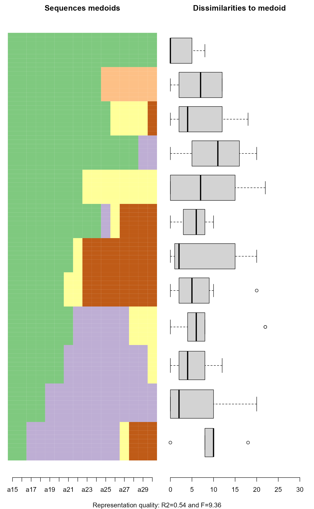
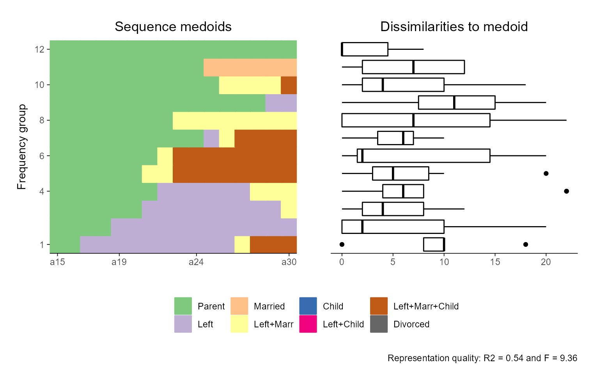
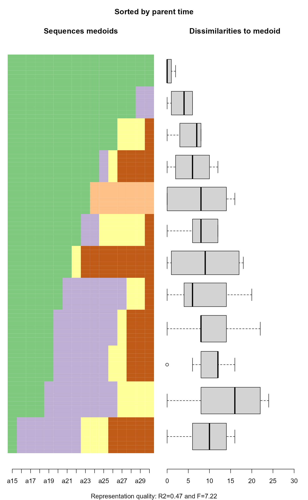
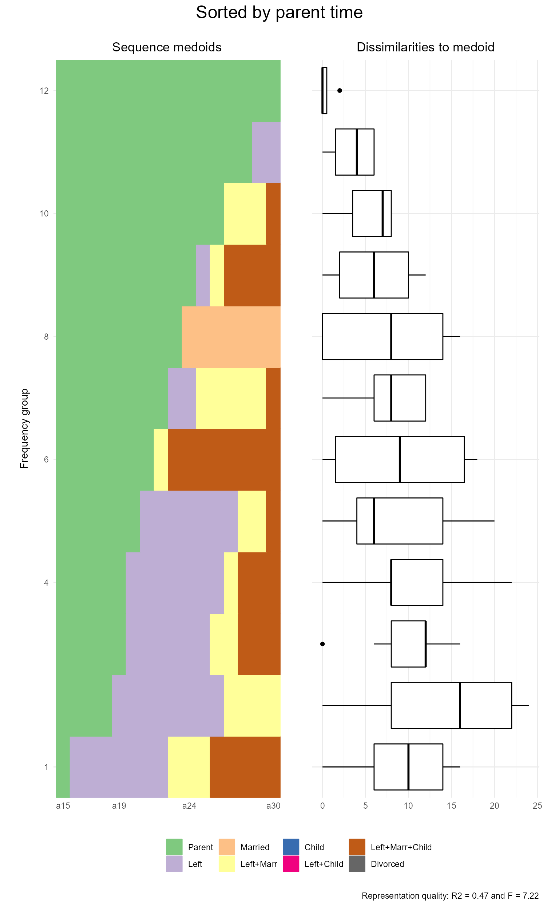

Function for rendering sequence index plots with ggplot2 instead of base
R's plot function that is used by TraMineRextras::seqplot.rf.
Note that ggseqrfplot uses patchwork to combine the different components of the plot.
For further details on relative frequency sequence plots see documentation of TraMineRextras::seqplot.rf.
Arguments
- seqdata
State sequence object (class
stslist) created with theTraMineR::seqdeffunction.- k
integer specifying the number of frequency groups
- diss
pairwise dissimilarities between sequences in
seqdata(seeTraMineRextras::seqdist)- sortv
optional sorting variable that may be used to compute the frequency groups. If
NULL(default), an MDS is used. Ties are randomly ordered.- ylab
character string specifying title of y-axis. If
NULLaxis title is "Frequency group"- yaxis
Controls if a y-axis is plotted. When set as
TRUE, index of frequency groups is displayed.- box.color
specifies color of boxplot borders; default is "black
- box.fill
specifies fill color of boxplots; default is "white"
- box.alpha
specifies alpha value of boxplot fill color; default is 1
- which.plot
character string specifying which components of relative frequency sequence plot should be displayed. Default is
"both". If set to"medoids"only the index plot of medoids is shown. If"diss.to.med"only the box plots of the group-specific distances to the medoids are shown.- quality
specifies if representation quality is shown as figure caption; default is
TRUE
Value
A relative sequence index plot using ggplot.
Details
Note that an identical function call might produce different results
if sortv has ties, because the sequences are sorted randomly within
each set of ties (see rank; ties.method="random")
Examples
## From TraMineRextras::seqplot.rf
library(TraMineR)
library(TraMineRextras)
#> TraMineRextras stable version 0.6.3 (Built: 2022-03-25)
#> Functions provided by this package are still in test
#> and subject to changes in future releases.
library(patchwork)
library(ggplot2)
## Defining a sequence object with the data in columns 10 to 25
## (family status from age 15 to 30) in the biofam data set
data(biofam)
biofam.lab <- c("Parent", "Left", "Married", "Left+Marr",
"Child", "Left+Child", "Left+Marr+Child", "Divorced")
## Here, we use only 100 cases selected such that all elements
## of the alphabet be present.
## (More cases and a larger k would be necessary to get a meaningful example.)
biofam.seq <- seqdef(biofam[501:600, ], 10:25, labels = biofam.lab)
#> [>] 8 distinct states appear in the data:
#> 1 = 0
#> 2 = 1
#> 3 = 2
#> 4 = 3
#> 5 = 4
#> 6 = 5
#> 7 = 6
#> 8 = 7
#> [>] state coding:
#> [alphabet] [label] [long label]
#> 1 0 0 Parent
#> 2 1 1 Left
#> 3 2 2 Married
#> 4 3 3 Left+Marr
#> 5 4 4 Child
#> 6 5 5 Left+Child
#> 7 6 6 Left+Marr+Child
#> 8 7 7 Divorced
#> [>] 100 sequences in the data set
#> [>] min/max sequence length: 16/16
diss <- seqdist(biofam.seq, method = "LCS")
#> [>] 100 sequences with 8 distinct states
#> [>] creating a 'sm' with a substitution cost of 2
#> [>] creating 8x8 substitution-cost matrix using 2 as constant value
#> [>] 76 distinct sequences
#> [>] min/max sequence lengths: 16/16
#> [>] computing distances using the LCS metric
#> [>] elapsed time: 0.02 secs
## Using 12 groups and default MDS sorting
## ... with TraMineRextras::seqplot.rf
seqplot.rf(biofam.seq, diss = diss, k = 12)
#> [>] Using k=12 frequency groups
#> [>] Pseudo/median-based-R2: 0.5391125
#> [>] Pseudo/median-based-F statistic: 9.357815

## ... with ggseqrfplot
ggseqrfplot(biofam.seq, diss = diss, k = 12)
#> [>] Using k=12 frequency groups
#> [>] Pseudo/median-based-R2: 0.5391125
#> [>] Pseudo/median-based-F statistic: 9.357815

## With a user specified sorting variable
## Here time spent in parental home
parentTime <- seqistatd(biofam.seq)[, 1]
#> [>] computing state distribution for 100 sequences ...
## ... with TraMineRextras::seqplot.rf
set.seed(123)
seqplot.rf(biofam.seq, diss = diss, k = 12,
sortv = parentTime, main = "Sorted by parent time")
#> [>] Using k=12 frequency groups
#> [>] Pseudo/median-based-R2: 0.4745098
#> [>] Pseudo/median-based-F statistic: 7.223881

## ... with ggseqrfplot
set.seed(123)
ggseqrfplot(biofam.seq, diss = diss, k = 12, sortv = parentTime) +
plot_annotation(title = "Sorted by parent time",
theme = theme(plot.title = element_text(hjust = 0.5, size = 18)))
#> [>] Using k=12 frequency groups
#> [>] Pseudo/median-based-R2: 0.4745098
#> [>] Pseudo/median-based-F statistic: 7.223881
